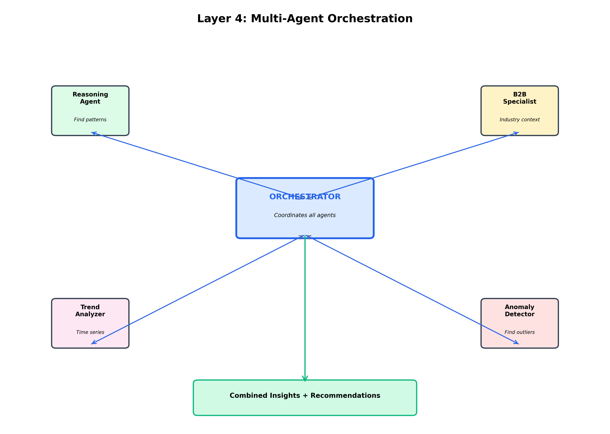

January 2026
CHAPTER 6
LAYER 4: ANALYSIS & INTELLIGENCE
Navigation: ← Chapter 5 | Index | Next: Chapter 7 →
Layer 4 is the intelligence core of the PCA Agent. This is where raw data transforms into actionable insights through multi-agent AI orchestration.
Office Analogy - The Analysis Team:
Imagine you have a team of expert consultants analyzing your marketing data: - Senior Analyst (Reasoning Agent): Finds patterns and trends in the numbers - Industry Expert (B2B Specialist): Adds context about your specific industry - Trend Forecaster: Predicts what will happen next - Auditor (Anomaly Detector): Spots unusual patterns that need attention - Project Manager (Orchestrator): Coordinates everyone and compiles the final report
That’s exactly what Layer 4 does - it’s like having a team of AI consultants!
Time: ~500-2000ms
Input: DataFrame from Layer 3
Output: List of insights with priorities and recommendations

Office Analogy - The Project Manager:
Think of a project manager coordinating a team: 1. Receives the task (analyze this data) 2. Breaks it down into subtasks 3. Assigns work to specialists 4. Collects results from each person 5. Combines everything into a final report 6. Prioritizes the most important findings
The Orchestrator does exactly this with AI agents!
Why Multiple Agents?
Instead of one giant AI trying to do everything, we have specialized agents:
| Agent | Specialty | Office Equivalent |
|---|---|---|
| Reasoning Agent | Pattern detection | Data Analyst |
| B2B Specialist | Industry context | Industry Consultant |
| Trend Analyzer | Time series forecasting | Market Researcher |
| Anomaly Detector | Outlier identification | Quality Auditor |
| Orchestrator | Coordination | Project Manager |
Benefits: - Specialization: Each agent is expert in one thing - Parallel Processing: Multiple agents work simultaneously - Modularity: Easy to add/remove agents - Cost Efficiency: Use cheaper models for simple tasks
What it does: Analyzes data to find patterns, trends, and correlations
Office Analogy: The senior data analyst who looks at spreadsheets and says “Aha! I notice that whenever we increase Facebook spend, our CPA goes down, but only on weekends!”
1. Trend Detection
# Example insight
"Spend has increased 23% week-over-week for the past 3 weeks,
indicating an aggressive scaling strategy"2. Correlation Analysis
# Example insight
"Strong negative correlation (-0.85) between ad frequency and CTR,
suggesting ad fatigue"3. Comparative Analysis
# Example insight
"Google Search campaigns outperform Facebook by 45% on ROAS,
but Facebook has 3x higher volume"4. Threshold Violations
# Example insight
"CPA exceeded target threshold ($15) on 12 out of 14 days,
requiring immediate optimization"Input:
{
"data": DataFrame[date, campaign, spend, conversions, roas],
"question": "How are my campaigns performing?",
"context": "User wants overall performance assessment"
}Process: 1. Calculate key metrics (averages, totals, growth rates) 2. Identify trends (increasing, decreasing, stable) 3. Find correlations between metrics 4. Compare against benchmarks 5. Generate natural language insights
Output:
[
{
"insight": "Total spend increased 23% WoW",
"priority": "high",
"category": "trend",
"confidence": 0.95
},
{
"insight": "ROAS declined 8% despite increased spend",
"priority": "critical",
"category": "performance",
"confidence": 0.92
}
]What it does: Adds industry-specific context and best practices
Office Analogy: The industry consultant who says “In the SaaS industry, a $50 CPA is actually excellent because the lifetime value is typically $2,000+”
The B2B Specialist has deep knowledge of: - SaaS: Long sales cycles, high LTV, focus on MQL quality - E-commerce: Short sales cycles, focus on ROAS and AOV - B2B Services: Relationship-based, focus on lead quality - Financial Services: Compliance-heavy, focus on qualified leads
1. Benchmark Comparison
# Example insight
"Your $45 CPA is 23% below the SaaS industry average of $58,
indicating efficient acquisition"2. Best Practice Recommendations
# Example insight
"For B2B SaaS, consider increasing spend on LinkedIn where
decision-makers are more active than Facebook"3. Seasonality Context
# Example insight
"Q4 typically sees 30-40% higher CPAs in B2B due to budget
exhaustion and holiday slowdowns"4. Channel-Specific Advice
# Example insight
"Google Search works well for high-intent SaaS buyers,
while Display is better for brand awareness"What it does: Forecasts future performance based on historical patterns
Office Analogy: The market researcher who looks at past sales data and predicts “Based on the last 6 months, I expect sales to increase 15% next quarter”
1. Linear Trend - Simple growth/decline patterns - Good for stable metrics
2. Moving Average - Smooths out short-term fluctuations - Good for noisy data
3. Seasonal Decomposition - Identifies weekly/monthly patterns - Good for recurring cycles
4. Prophet (Facebook’s Algorithm) - Advanced time series forecasting - Handles holidays and seasonality
# Trend projection
"At current growth rate (5% WoW), spend will reach $100k/week
by end of quarter"
# Seasonality detection
"Conversions consistently peak on Tuesdays and Wednesdays,
dropping 30% on weekends"
# Forecast with confidence
"Predicted ROAS for next week: 3.2 (±0.4) based on 8-week trend"What it does: Identifies unusual patterns that need immediate attention
Office Analogy: The quality auditor who reviews reports and flags “Wait, this number doesn’t make sense - we’ve never spent $50k in one day before!”
1. Statistical Outliers
# Example
"Spend on 2024-01-15 was $45k, 4.2 standard deviations above
the 30-day average of $12k"2. Sudden Changes
# Example
"CPA jumped from $15 to $67 overnight - possible tracking issue
or campaign misconfiguration"3. Missing Data
# Example
"No conversion data recorded for 2024-01-10, but spend continued -
check tracking pixel"4. Impossible Values
# Example
"ROAS of 0.02 detected - this means $1 spent generated $0.02 revenue,
likely a data error"What it does: Coordinates all agents and combines their outputs
Office Analogy: The project manager who collects reports from all team members, removes duplicates, prioritizes findings, and creates the executive summary
Step 1: Task Distribution
# Orchestrator sends data to all agents in parallel
tasks = [
reasoning_agent.analyze(data),
b2b_specialist.contextualize(data, industry="SaaS"),
trend_analyzer.forecast(data),
anomaly_detector.scan(data)
]
# Wait for all to complete
results = await asyncio.gather(*tasks)Step 2: Deduplication
# Remove duplicate insights
# Example: Both Reasoning and Anomaly might flag the same spike
unique_insights = deduplicate(results)Step 3: Prioritization
# Rank by importance
priorities = {
"critical": ["data_error", "budget_overrun", "zero_conversions"],
"high": ["significant_trend", "threshold_violation"],
"medium": ["minor_trend", "benchmark_comparison"],
"low": ["general_observation"]
}Step 4: Synthesis
# Combine related insights
# Example: "Spend increased 20%" + "ROAS decreased 10%"
# → "Efficiency declining despite scale"Step 5: Recommendation Generation
# Based on all insights, suggest actions
recommendations = [
"Reduce spend on underperforming campaigns",
"Increase budget for high-ROAS channels",
"Investigate tracking issue on Campaign X"
]| Priority | Criteria | Action Required | Example |
|---|---|---|---|
| CRITICAL | Data errors, budget overruns | Immediate | “No conversions tracked for 3 days” |
| HIGH | Significant trends, threshold violations | Within 24h | “CPA 50% above target” |
| MEDIUM | Notable patterns, opportunities | This week | “Google outperforming Facebook” |
| LOW | General observations | FYI only | “Spend consistent with last week” |
Each insight includes a confidence score:
{
"insight": "ROAS declining",
"confidence": 0.95, # 95% confident
"evidence": "8-week consistent downward trend, p-value < 0.01"
}Confidence Factors: - Data quality: More data = higher confidence - Statistical significance: p-value < 0.05 - Consistency: Multiple agents agree - Historical accuracy: Past predictions were correct
User Question: “How are my campaigns performing?”
Input Data:
date campaign spend conversions roas
0 2024-01-01 Google Search $5k 45 3.2
1 2024-01-01 Facebook $3k 20 2.1
...Agent Outputs:
Reasoning Agent:
[
"Total spend: $127k (↑15% vs last week)",
"Total conversions: 1,234 (↑8% vs last week)",
"Average ROAS: 2.8 (↓5% vs last week)",
"Google Search is top performer with 3.5 ROAS"
]B2B Specialist:
[
"Your $42 CPA is excellent for B2B SaaS (industry avg: $65)",
"LinkedIn typically outperforms Facebook for B2B - consider testing",
"Q1 is strong season for SaaS - good time to scale"
]Trend Analyzer:
[
"Spend growing 15% WoW for 4 consecutive weeks",
"ROAS declining 3-5% WoW - efficiency decreasing",
"Forecast: If trend continues, ROAS will hit 2.5 in 2 weeks"
]Anomaly Detector:
[
"⚠️ Facebook CPA spiked to $89 on Jan 15 (normal: $45)",
"✓ No data quality issues detected",
"✓ All campaigns within budget limits"
]Orchestrator Output:
{
"summary": "Campaigns are scaling well (+15% spend) but efficiency
is declining (-5% ROAS). Google Search is your best
performer. Facebook had an anomaly on Jan 15.",
"insights": [
{
"text": "Facebook CPA spiked to $89 on Jan 15",
"priority": "high",
"category": "anomaly",
"confidence": 0.98
},
{
"text": "ROAS declining 5% WoW despite 15% spend increase",
"priority": "high",
"category": "trend",
"confidence": 0.92
},
{
"text": "Google Search outperforming with 3.5 ROAS",
"priority": "medium",
"category": "performance",
"confidence": 0.95
}
],
"recommendations": [
"Investigate Facebook spike on Jan 15 - possible ad set issue",
"Consider reducing Facebook spend and reallocating to Google",
"Monitor ROAS trend - may need optimization if decline continues"
]
}All agents run simultaneously:
# Sequential (slow): 2000ms total
result1 = reasoning_agent.analyze() # 500ms
result2 = b2b_specialist.contextualize() # 500ms
result3 = trend_analyzer.forecast() # 500ms
result4 = anomaly_detector.scan() # 500ms
# Parallel (fast): 500ms total
results = await asyncio.gather(
reasoning_agent.analyze(),
b2b_specialist.contextualize(),
trend_analyzer.forecast(),
anomaly_detector.scan()
)Speedup: 4x faster with parallel execution!
Expensive computations are cached:
@cache(ttl=300) # Cache for 5 minutes
def calculate_trends(data):
# Expensive statistical analysis
return trendsNot all agents run for every query:
if query_type == "simple_metric":
# Only use Reasoning Agent
agents = [reasoning_agent]
elif query_type == "trend_analysis":
# Use Reasoning + Trend Analyzer
agents = [reasoning_agent, trend_analyzer]
else:
# Use all agents
agents = [reasoning_agent, b2b_specialist, trend_analyzer, anomaly_detector]✅ Layer 4 is the intelligence core - transforms data into insights
✅ Multi-agent architecture - specialized AI agents working together
✅ Orchestrator coordinates - manages all agents and combines outputs
✅ Parallel processing - all agents run simultaneously for speed
✅ Prioritized insights - critical issues flagged first
✅ Actionable recommendations - not just analysis, but what to do
Remember: Layer 4 is like having a team of expert consultants analyzing your data 24/7. Each consultant (agent) has their specialty, and the project manager (orchestrator) makes sure you get a comprehensive, prioritized report!
Navigation: ← Chapter 5 | Index | Next: Chapter 7 →